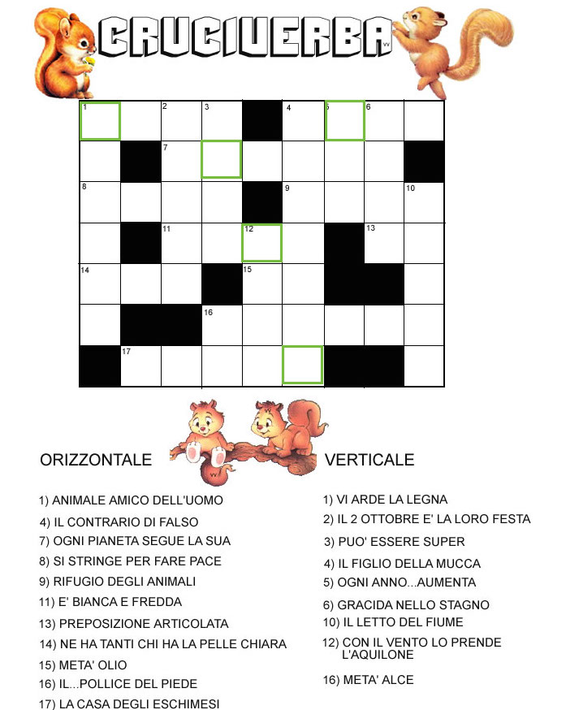

<div>
  <p>La risposta è la parola che esce dalle lettere contornate di verde(da sx verso dx, alto verso il basso)! <br>
Potete decidere se ricopiarlo su un foglio, oppure fare click col tasto destro del mouse, <br>
salvarvi l'immagine sul computer e scrivere con un programma come Paint. <br>
Se siete col telefono o tablet potete provare a fare uno screen e poi modificarlo...buon cruciverba!</p>
</div>
